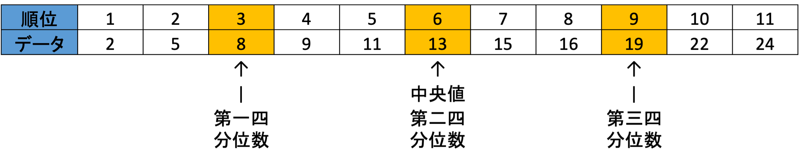

中心を表す基本統計量
ヒストグラムにおける峰のある位置, 分布の中心がどこにあるかを表す統計量には, 平均値, 中央値, 最頻値などがあります. この 3 つは, いずれも分布の中心を表す統計量ですが, 分布の歪みによって意味が異なり, 使い分けが必要となります.
算術平均 (mean)
分布の中心を表す統計量としてもっとも一般的なものに, 平均値があります. しかし, 一口に平均といっても, いくつかの種類があるので注意しましょう. 分布の中心を表す場合に用いられる平均は基本的に算術平均ですが, ここでは異なる定義の平均として, 幾何平均と調和平均も紹介します.
一般に「平均」といったときにイメージされる, すべてのデータの和をデータの個数で割った値を算術平均といいます.
算術平均は対象とするデータを足し合わせることによって基準となる値が算出される場合に使用します.
n 個の観測値 x_1, x_2, ..., x_n のとき, 平均値 \bar{x} は
\bar{x} = \frac{1}{n} (x_1 + ... + x_n) = \frac{1}{n} \sum_{i=1}^{n} x_i
例: 165, 171, 189 の算術平均は
\bar{x} = \frac{1}{3} (165 + 171 + 189) = 175
となります.
pandas で平均を求めるには, .mean() を利用します.
df = pd.DataFrame({'x':[165,171,189]})
print(df['x'].mean()) #>>>175幾何平均 (geometric mean)
すべてのデータを乗じて, データの数で根を取った値を幾何平均といいます. 増加率, 減少率など対象とするデータを相互に乗じることによって基準となる値が算出される場合に使用します.
n 個の観測値 x_1, x_2, ..., x_n のとき, 幾何平均 x_G は x_G = \sqrt[n]{x_1 \cdot x_2 \cdot ... \cdot x_n} = \left(\prod_{i=1}^{n} x_i\right)^{\frac{1}{n}}
例: 各年の売上と, その前年比 (前年の売上に対する倍率) が以下のように表されるとき, 売上が平均で何 % ずつ伸びているかを考えます.
| 年度 | 売上 | 前年比 |
|---|---|---|
| 1 | 300 | |
| 2 | 350 | 117% |
| 3 | 600 | 171% |
| 4 | 1000 | 167% |
このとき算術平均を用いると, \text{算術平均} = \frac{1.17 + 1.71 + 1.67}{3} \approx 1.52 となり,
300 \cdot 1.52^3 \approx 1054
平均的な伸び率を 3 回乗じても 4 年目の売上の値になりません. これは, 毎年度の値に前年比を掛けることで次の年度の値が求まるのに対して, 算術平均は毎年度足す操作をした場合の平均値を求めているからです.
そこで, 幾何平均を求めてみると,
\text{幾何平均} = \sqrt[3]{\frac{350}{300} \cdot \frac{600}{350} \cdot \frac{1000}{600}} = \sqrt[3]{\frac{1000}{300}} \approx 1.494, \\ 300 \cdot 1.494^3 \approx 1000 となり, 4 年目の値と一致します.
調和平均 (harmonic mean)
先ほどの幾何平均が掛け算の平均値だったのに対して, 割り算の平均値を調和平均といい, 速度などの定義に割り算が含まれている計算で用います.
調和平均は, 別の値を対象とするデータで除して足し合わせることによって基準となる値が算出される場合に使用します.
n 個の観測値 x_1, x_2, ..., x_n のとき, 調和平均 x_H は \frac{1}{x_H} = \frac{1}{n} \left( \frac{1}{x_1} + ... + \frac{1}{x_n} \right) \\ \iff \\ x_H = \frac{n}{\frac{1}{x_1} + ... + \frac{1}{x_n}} = \frac{n}{\sum_{i=1}^{n} \frac{1}{x_i}}
例: 平均速度
100 km の道のりを行きは車 (60 km/h), 帰りは自転車 (30 km/h) で移動した場合, 算術平均は 45 km/h となります. しかし, かかった時間は \frac{\text{距離}}{\text{速度}} で求まるので, 車は \frac{100}{60}, 自転車は \frac{100}{30} となり, 速度は \frac{\text{距離}}{\text{時間}} で求まるので, 平均速度は
\frac{200}{\frac{100}{60} + \frac{100}{30}} = \frac{2}{\frac{1}{60} + \frac{1}{30}} = 40
となり, 算術平均の 45 km/h とは一致しません. 右辺の \frac{2}{\frac{1}{60} + \frac{1}{30}} が, 60 と 30 の調和平均です.
中央値 (median)
中心を表す統計量として, データを昇順に並び替えて, そのちょうど真ん中の数を表す中央値もよく利用されます.
n 個の観測値を大きさの順に並べ替えて x_1, x_2, ..., x_n としたとき, 中央値 \tilde{x} は
\tilde{x} = \begin{cases} x_{\frac{n+1}{2}}, ~~& n \text{ が奇数のとき} \\ \frac{x_{ \frac{n}{2}} + x_{\frac{n}{2} + 1 }}{2}, ~~ & n \text{ が偶数のとき} \end{cases}
例: 観測値が 3, 4, 7, 9, 11, 12, 15 (n = 7) のとき, 中央値は \tilde{x} = x_{\frac{n+1}{2}} = x_{\frac{8}{2}} = x_4 = 9
となります.
また, 観測値が 4, 5, 6, 10, 14, 17 のように偶数個の場合は \tilde{x} = \frac{x_{ \frac{n}{2}} + x_{\frac{n}{2} + 1 }}{2} = \frac{6 + 10}{2} = 8
となります.
pandas では, 中央値は .median() で求めることができます.
df = pd.DataFrame({'x':[3,4,7,9,11,12,15]})
print(df['x'].median()) #9.0
df = pd.DataFrame({'x':[4,5,6,10,14,17]})
print(df['x'].median()) #8.0pandas を使わずに実装するときは, 添字を 1 つずらして読み替えます. 式の添字は 1 から始まりますが, Python のリストの添字は 0 から始まるためです. 読み替えると, 奇数のときの x_{\frac{n+1}{2}} は s[(n - 1) // 2], 偶数のときの x_{\frac{n}{2}} と x_{\frac{n}{2} + 1} は s[n // 2 - 1] と s[n // 2] になります. 奇数のとき (n - 1) // 2 と n // 2 は同じ位置を指すので, 場合分けをせずに次の 1 つの式で書けます.
def median(xs):
s = sorted(xs)
n = len(s)
return (s[(n - 1) // 2] + s[n // 2]) / 2
print(median([3, 4, 7, 9, 11, 12, 15])) # 9.0
print(median([4, 5, 6, 10, 14, 17])) # 8.0次の四分位数の説明でも, 位置は 0 から数えます.
四分位数 (quartiles)
中央値: データを小さい順に並べたときに観測数が 50% となる点
四分位数: データを小さい順に並べたときに, 観測数が 25%, 50%, 75% となる点. 第一四分位数 (25%), 第二四分位数 (50%), 第三四分位数 (75%)
四分位範囲: 第三四分位数から第一四分位数を引いた値 (第一四分位数から第三四分位数までの幅)

pandas で四分位数を求めるには, .quantile(q=%点の数値,interpolation='nearest') を使います.
interpolation (補間) は, 値がインデックス i と j の間にある場合に補間する方法を指定する引数で, 以下のような設定が可能です.
.quantile() では, データの最大インデックス (データ数 - 1) に q を掛けた位置の値を求めます. 例えば xs=[2,5,8,9,11,13,15,16,19,22,24] の 25% 点は, 10*0.25=2.5 となり xs[2.5] となるような点を求めます.
| 引数 | 効果 | 25% 点の場合の計算 |
|---|---|---|
'linear' |
線形補間 | xs[2] + (xs[3] - xs[2]) * 0.5 = 8.5 |
'lower' |
小さい方 | xs[2] = 8 |
'higher' |
大きい方 | xs[3] = 9 |
'midpoint' |
中間 | (xs[2] + xs[3])/2 = 8.5 |
'nearest' |
近い方 | xs[2] = 8 |
xs = [2,5,8,9,11,13,15,16,19,22,24]
df = pd.DataFrame({'x':xs})
print('25%点:',df['x'].quantile(q=0.25, interpolation='linear'))
print('25%点:',df['x'].quantile(q=0.25, interpolation='nearest'))
print('50%点:',df['x'].quantile(q=0.5, interpolation='nearest'))
print('75%点:',df['x'].quantile(q=0.75, interpolation='nearest'))
"""
25%点: 8.5
25%点: 8
50%点: 13
75%点: 19
"""最頻値 (mode)
中心を表す統計量の最後は, 最も頻繁にあらわれる値を表す最頻値です. 量的データを度数分布表にまとめた場合は, 最も度数の高い階級を指します.
最頻値の意味は, データの種類によって異なります. (※ 質的データの平均値などは定義できません)
質的データの場合
- 最大度数のカテゴリー
量的データの場合
最大度数の階級 = 最頻階級 (modal class)
長さや気温など同じ間隔で値が存在するもの
pandas で最頻値を求める方法はいろいろありますが, 単純に同じデータが最も多い値を探す場合には .mode() が利用できます. .mode() は最頻値が複数ある場合に対応するために Series を返すので, [0] で最初の値を取っています.
df = pd.DataFrame({'x':['A','A','B','C']})
print(df['x'].mode()[0]) # A
df = pd.DataFrame({'x':[1,3,2,4,5,3]})
print(df['x'].mode()[0]) # 3しかし, 連続値のデータでは同じ値がほとんど現れないため, この方法では最頻階級を求められません. 区間ごとの度数から最頻階級を求めるには, value_counts() の引数 bins で区間を指定します.
# ランダムな0から100までのデータの生成
np.random.seed(0) # 再現性のためにシードを設定
df = pd.DataFrame({'x':np.random.randint(0, 101, size=1000)})
print(df)
#10区切りで度数を求める
bins = [0,10,20,30,40,50,60,70,80,90,100]
freq = df['x'].value_counts(bins =bins, sort=False)
print(freq)
#最大の度数のindexを取得
print(freq.idxmax())
"""
x
0 44
1 47
2 64
3 67
4 67
.. ..
995 79
996 41
997 17
998 80
999 43
[1000 rows x 1 columns]
(-0.001, 10.0] 121
(10.0, 20.0] 87
(20.0, 30.0] 96
(30.0, 40.0] 107
(40.0, 50.0] 94
(50.0, 60.0] 92
(60.0, 70.0] 97
(70.0, 80.0] 103
(80.0, 90.0] 103
(90.0, 100.0] 100
Name: count, dtype: int64
(-0.001, 10.0]
"""中心を表す代表値の使い分け
中心を表す基本統計量である, 算術平均, 中央値, 最頻値は, ヒストグラムが単峰で左右対称である場合一致します. したがってヒストグラムを作成して単峰で左右対称である場合には, どの値を利用しても大きな違いは生まれません.
一方で, 分布が歪んでいる場合には, それぞれの統計量の値が変わります. 分布が歪んでいる場合には, 算術平均よりも最頻値や中央値のほうが, 目的に合った中心を表すことがあります.

例えば, 以下の図は, 平成 21 年の国民生活基礎調査による, 世帯ごとの所得の分布を表したヒストグラムです.

この図では, 分布が大きく右に歪んでいるため平均値, 中央値, 最頻値の値が異なっています. それぞれの値が何を意味するのかを考えてみましょう.
- 平均値: 547 万円
- 全世帯の所得を足して世帯数で割った値 (仮に全世帯が平等に受け取るならこの金額)
- 中央値: 427 万円
- 所得の低い順に並べたときに真ん中の世帯の所得 (これ以上なら真ん中より上の所得)
- 最頻値: 250 万円
- 最も度数の多い階級 (街で適当に声をかけるとこれくらいである可能性が高い)
このようなときに, 世間一般の人の感覚を表す値として平均値を利用することは適当ではないでしょう. 平均値は, 分布が歪んでいる場合には少数のデータに大きく引っ張られるため全体の傾向を表せない場合があります.
例えば, 年収 300 万円の人が 100 人いる村に年収 50 億円の野球選手が引っ越してくると, 平均年収は約 5250 万円, 中央値と最頻値は 300 万円になります.
統計量はそれぞれの意味を把握したうえで, 目的に応じて使い分けるようにしましょう.
この節に対応する演習は, Exercise DSP4-1です.